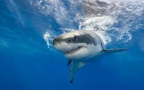

Hiu adalah predator laut yang terkenal dengan bentuk tubuhnya yang ramping dan giginya yang tajam. Hiu memiliki indera penciuman yang sangat tajam untuk mendeteksi mangsa dari jarak jauh. Mereka juga memiliki kulit yang kasar yang membantu mempercepat gerakan di air.
Hiu dapat ditemukan di hampir semua lautan di dunia. Mereka hidup di berbagai habitat mulai dari perairan dangkal hingga laut dalam. Beberapa jenis hiu lebih suka perairan tropis, sementara yang lain hidup di air dingin. Hiu sering berenang di dekat pantai, karang, ataupun di tengah samudera. Mereka dapat bertahan di berbagai kondisi lingkungan.
Hiu memiliki banyak spesies dengan ukuran dan bentuk yang berbeda-beda. Hiu paus adalah spesies hiu terbesar, panjangnya bisa mencapai lebih dari 12 meter. Sedangkan hiu martil memiliki bentuk kepala unik menyerupai palu. Ada juga hiu putih besar yang terkenal karena kekuatannya dan perannya dalam ekosistem laut. Setiap spesies hiu memiliki keunikan tersendiri baik dalam berburu maupun bertahan hidup.